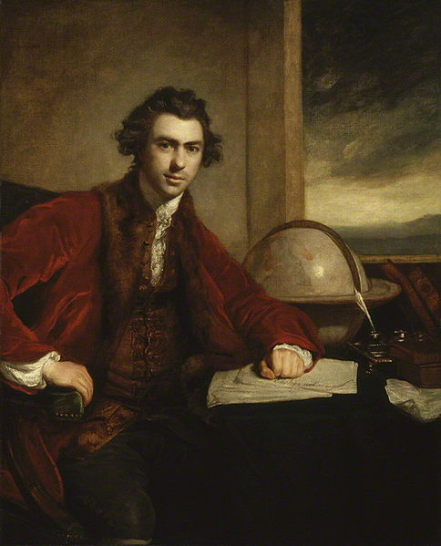

The Cape Voyages Archive
Many of the most substantial accounts of colonial South Africa are drawn from travel narratives: books written by visitors to the Cape which were popular with audiences in Europe throughout the nineteenth century. While these narratives attracted readers with exoticism, adventure, and humor, they were also deeply concerned with ethnography and biological classification.